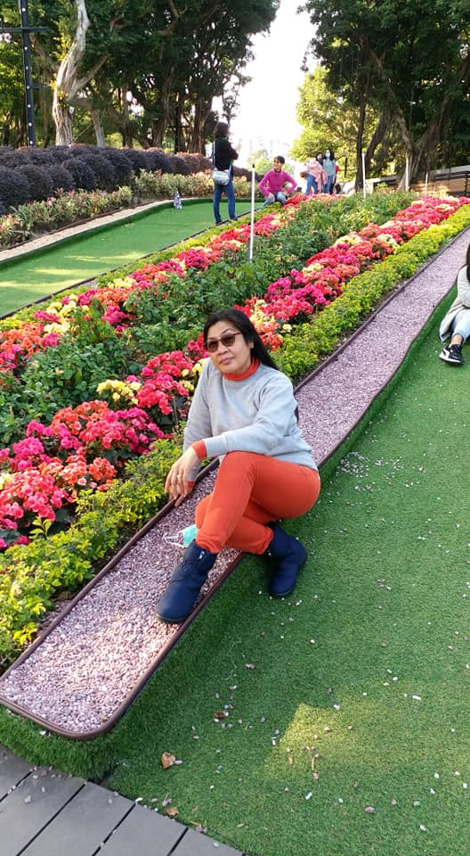
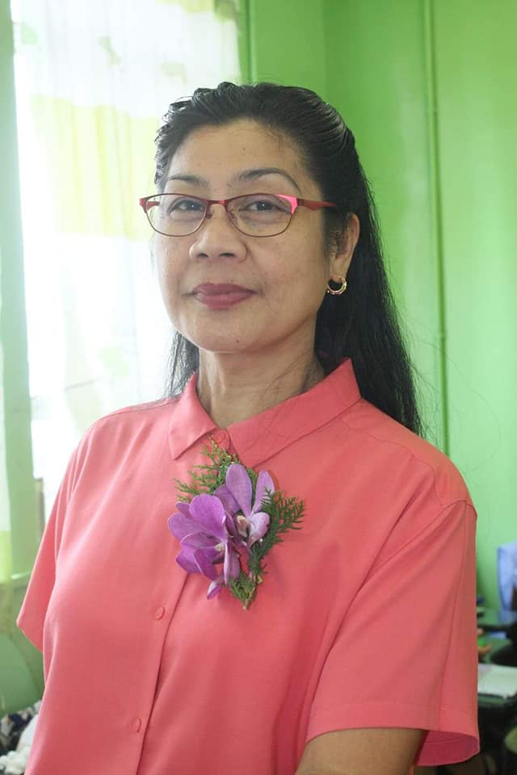
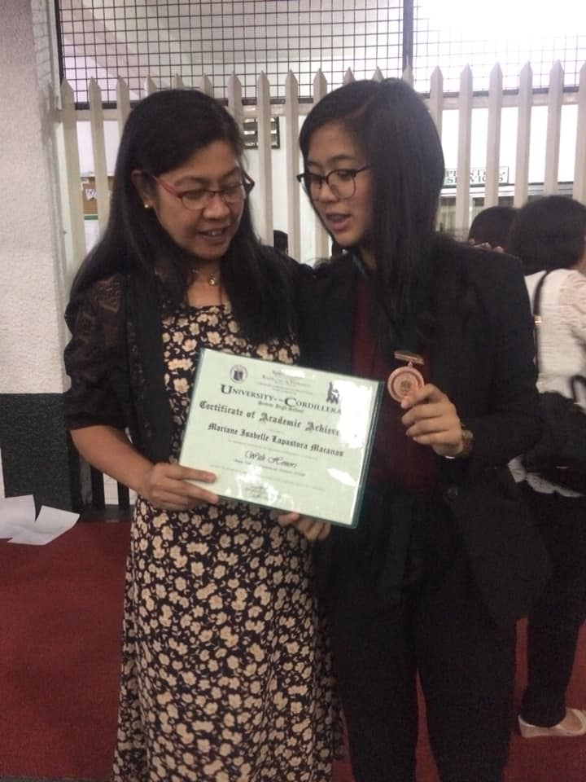
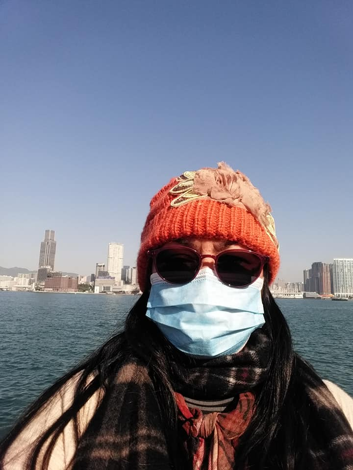
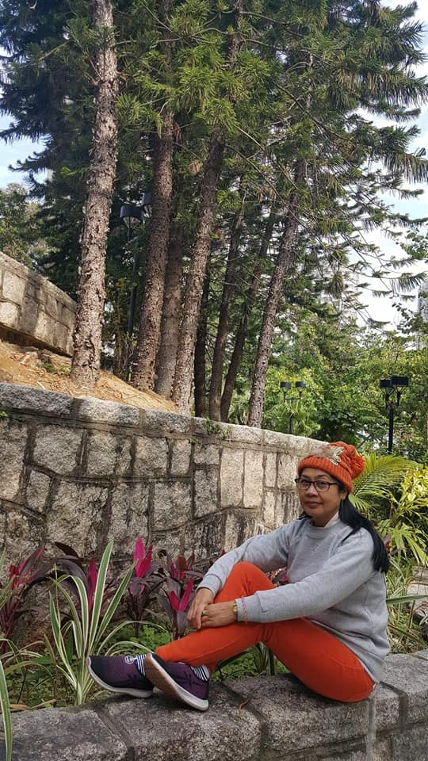

Evelyn L. Macanas
A friend, a sister, and a GREAT MOTHER





Since when did my mother became a hero?
- 1965 - Born in San Agustin, Isabela
- 1985 - Graduated as BS Biology 1994 - Started going abroad, Saudi, to work for herself and her family.
- 2000 - Met the love of her life, Mario M. Macanas, my father.
- 2001 - They can't help but to fall inlove deeper, and so, they ended up marrying each other.
- 2001 - Gives birth to her cutest first born child, named Mariane Isabelle Kristele L. Macanas
- 2004 - Became a sweet and loveable mother to me, until she gaves birth to another beautiful second child, Marvelyn L. Macanas
- 2007 - Started going abroad, Hongkong, in order for her family to live a better life.
- Every 2 years - She's having a vacation here in the Philippines with us for a month, and ofcourse, we'll spend the whole time she's with us full of happiness and moments that she can carry when she goes back to Hongkong.